UnchartedX
How Old is Tiahuanaco? Is it the 'Cradle of American Man?'
Ben · 60 min · watch on YouTube · summarised 2026-09-29
A sixty-minute case for a much older Tiwanaku, and the unusual thing about its construction is that almost none of it is Ben's own. It is an account of Arthur Posnansky's Tihuanacu: The Cradle of American Man (1945), read out at length, with modern work brought in where it touches the same questions. Ben says he has spent a couple of years on the books, which he now owns and is digitising 57:26–58:00. The video's structure follows Posnansky's: geology first, then climate, then flooding and erosion, then destruction, and the astronomy last.
The claim under examination is stated at the top 01:33–02:03. Academic consensus, an estimate Ben dates to around 2012, is that Tiwanaku was founded around 110 AD and collapsed around 1000 AD, and that this date derives entirely from radiocarbon results and a second technique, obsidian hydration dating. Radiocarbon results from organic material at the site going back to 1500 BC exist, he says, and have been dismissed as unreliable.
Posnansky's date, and it is worth being precise about what it applies to, is not the founding of the city. He dates the second period of occupation to around 15,000 BC 02:58–03:27.
Why a book from 1945
Ben makes the anticipated objection himself: Posnansky worked before radiocarbon dating existed 03:27–03:55. His answer is that the 15,000 BC figure was not produced by a dating technique at all, but assembled from the geological and climatic history of the region, now-extinct flora and fauna, semi-fossilised animal remains, folklore, cultural history, connections to other American sites, erosion at the site, and — carrying the most weight — astronomical alignment.
His objection to the radiocarbon date is a single sentence, repeated at the end: "carbon-14 dating might just be the last time somebody was buried there or started a campfire there. It says nothing about the age of the stonework itself." At 55:25–55:52 he adds that both carbon-14 and obsidian hydration rely on constants — decay rate, rate of water absorption into obsidian — and that both can vary, the second of them with climate.
Posnansky was Austrian, born in Vienna in 1873, spent close to fifty years on the site, and died in La Paz in 1946 02:03–02:31. Ben's account gives him as much credit for protecting Tiwanaku as for excavating it, and the video's longest quotations are Posnansky complaining about what was being done to the ruins while he watched.

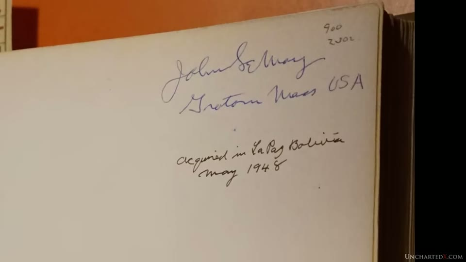
The 1945 four-volume work the whole video is an account of.
Three periods, and what distinguishes them
Posnansky's scheme, as Ben lays it out [15:58–18:46, 29:25–31:19]:
| period | material | what is attributed to it | how it ended |
|---|---|---|---|
| first | red sandstone, much of it semi-subterranean | the earliest art style; buildings now under Lake Titicaca | a short glacial epoch |
| second | andesite, some red sandstone | the Kalasasaya, the Akapana pyramid, Puma Punku | flooding |
| third | andesite only | repair, renovation and extension of the above | abruptly, works unfinished |
Two details in that table are load-bearing for the dating argument and are worth separating out.
The first period is underwater. Posnansky's claim is that wrought stone ruins can be seen in Lake Titicaca, on banks now covered, corresponding to an epoch before the second period — meaning the lake was once far lower than it is today, then rose. The quotation is long and Ben reads it in full 17:22–18:46.
The third period stops mid-project. Ben is explicit that Posnansky found no long decay: "It seems to have ended abruptly, with many works left unfinished, the ambitious projects of the third period never completed, and Tiwanaku emptied."
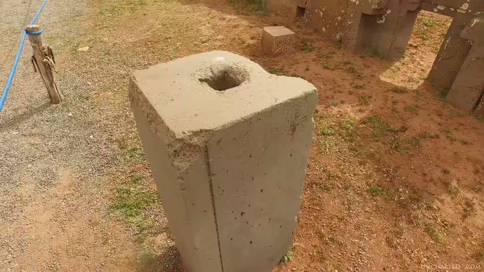
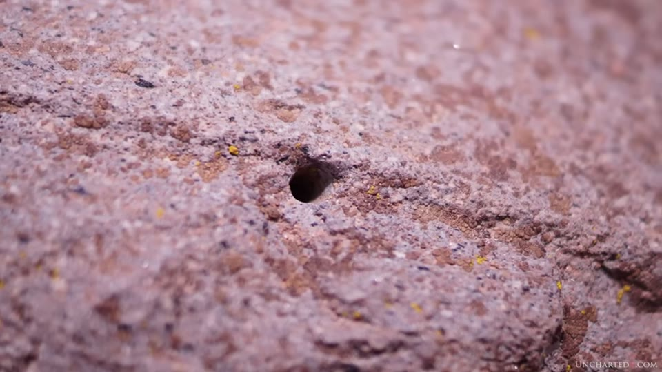
The drilled holes and sharp flat faces the video opens by calling mechanically precise.
The strandline that is no longer level
This is the most checkable thing in the video and the part Ben spends longest on 20:36–25:41.
A strandline — the shoreline left by a former lake level — runs across the Altiplano and has been surveyed for about 375 miles. The argument is in two steps, and Ben states both.
First, water finds its level, so the strandline was horizontal when it was made. Second, it is not horizontal now. The figures come from H.S. Bellamy's Built Before the Flood (1943), sent to Ben by a patron, and he reads them out 22:26–23:47:
| where | the strandline |
|---|---|
| near Sillustani, west of Lake Umayo, Puno department, Peru — the northernmost point surveyed | about 295 ft above the present level of Lake Titicaca |
| at Tiwanaku, southern end of the lake | 90 ft above the lake, and 4 ft below the coping stones of the parapets of the site's dry harbours, docks and canals |
| north end of Lake Poopó, on the slopes south of Oruro | 12,232 ft above sea level — 181 ft above Poopó, 274 ft below Titicaca, and 364 ft below the same strandline at Tiwanaku's latitude |
Lake Titicaca's own surface is given as 12,506 ft above sea level. The total drop from north to south is put at 800 ft over the 375 miles, a gradient Posnansky states as 0.3 mm per metre towards the south.
Ben's conclusion from it is the question he closes the section with: whether the geography of the Andes could have tilted that far in the thousand years since the mainstream end-date, or whether the tilt implies many thousands of years and an older site. He does not present it as settled — "It's an interesting problem, and one I hope to discuss with other researchers and geologists who might help to shed some more light on the enigma of the tilting strandline."

The extent of the Altiplano under water when the lake stood at Tiwanaku's shore.
The scale is worth stating because the video does. Titicaca today is 190 km long with a shoreline over 1,100 km. At the higher level the water would have covered almost the whole Altiplano — Bellamy's term for it, which Ben adopts, is the Inter-Andean Sea 23:47–24:16.
The harbour
The second and third periods, on this account, had the lake at the city's edge. The evidence offered [24:16–25:12, 28:00–29:25]:
- quay walls still discernible, dock-like basins, and a canal system Posnansky describes as in direct communication with the lake bed and surrounding the whole of Tiwanaku
- the docks measured by Posnansky at 34.73 m above the present lake level, a figure that appears on screen as a printed quotation from the book rather than as a measurement
- remains of fish and other aquatic species in the strata from his excavations, some of the same species still living in Titicaca, in many cases significantly larger
Of the three, the last is the one the video puts a document behind. Over it, a geological profile from Posnansky's book is shown — bilingual, headed Perfil geológico de Chihuas / Geological Profile of Chihuas — and its layers are labelled: 50 cm recent alluvium, 50 cm red clay, 2.5 m of lime with the freshwater mollusc Paludestrina, 30 cm of clay with Ancylus, and 20 m of clay with aquatic plants and vegetal sediments over old alluvium.

The aquatic species found in the strata, which is the document behind the harbour claim.
Posnansky's own figure for the flood level — a lake 34 m higher — leaves only ground above 3,845 m standing clear. The ruins today sit at 3,847 m.
Terraces into the snowline
The climate argument is short and rests on one photographable thing 26:09–27:03. The Altiplano today is arid and, on Ben's description, not a place that could support the population needed to build a metropolis. Remains of agricultural terracing survive on the surrounding mountains and run "right up into the current and permanent snowline". They are no use for agriculture at that height now.
What runs under that claim is a passing shot of open plain filmed from a moving car, with snow on the far horizon, followed by a general view of Puma Punku. No terracing appears in either.
Posnansky's reconstruction, read out at 27:03–28:00, is that after the short glacial epoch the glaciers retreated to the highest peaks and a benign climate followed, during which the second and third periods were built.
Erosion, and an argument aimed at his own side
At 33:36–34:30 Ben takes issue with a claim he attributes to "other channels and some people" rather than to academia: that there is no erosion at Tiwanaku, so it cannot be old. His words: "This is flat out false."
His account is that parts of the site show very great erosion — those elements left exposed — while the rest was buried in alluvium, flood-borne sediment, which protected it. He notes that andesite does not erode quickly, and not in a climate like the Altiplano's now. The burial is shown from Posnansky's book: an excavation photograph plated as Subterranean dwellings found by the French Mission near the balcony wall of the Sun Temple, trench, shovel and standing pillars behind.

That the site was excavated out of sediment, which is the video's explanation for why some of it is unweathered.
The worked example is the Sun Gate 34:30–35:05. It was found face down with only a portion of its back corner exposed; that corner is, on his description, quite badly eroded, while the carved face was preserved. Ben adds that its falling face down probably saved the artwork from the Spanish, and that the Spanish were the likeliest cause of its being broken in half.
The image carrying that passage is a line drawing from Posnansky's book, not a photograph, and its printed caption is legible in frame:
"Figure 11. Reconstructed drawing showing how the Spanish conquistadores and the 'extirpators of idolatry in Peru' must have found the Sun Door about 1630, then covered in part with dumped earth. (The erosion on the back of the door served as a basis for this drawing.)"
Two things in that caption are not in the narration: the drawing is derived from the erosion rather than a record of it, and the date given for the finding is about 1630, not the 1540 visit the video discusses elsewhere.

How the Sun Gate is said to have been found: face down, part of its back corner exposed.

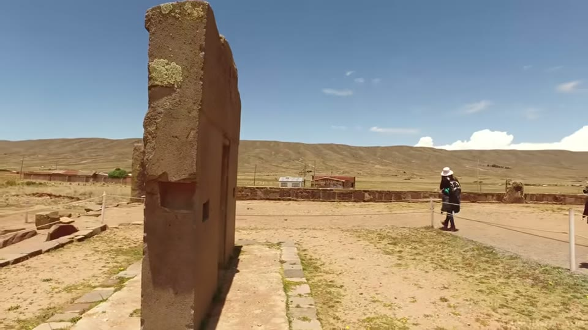
The carved face that was preserved, and the plain reverse that was not.
Extinct animals
Two items, both Posnansky's 42:49–43:48:
- a toxodon skull — an elephant-sized hoofed mammal, extinct in South America around the Younger Dryas, 11 to 13,000 years ago — found in the same strata layer as remains from Tiwanaku
- carvings of large cats, all classified today as pumas. Posnansky's question, which Ben puts as a question: why do only some of them show very large canine teeth? Are some of them smilodons?
Ben notes in passing that "sabre-toothed tiger" is a misnomer and that the animals are not closely related to tigers.
The passage runs over plates from the book — the Sun Gate frieze, a detail of one of its winged attendant figures, and one plated A puma of black stone, now in the Open-air Museum of La Paz, whose muzzle is closed and blocky. No carving showing large canines is on screen, and neither is the toxodon.
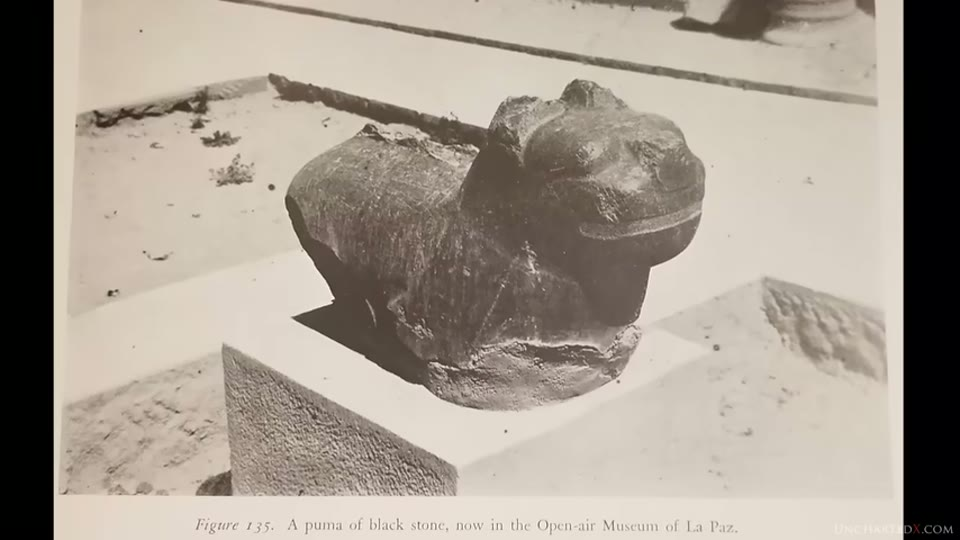
The cat carvings the video asks whether some of them are smilodons rather than pumas.
What was taken, and what was rebuilt
A long section, and most of it is Posnansky in his own voice 35:05–39:23. Cieza de León visited in 1540 and left the earliest known written account, describing ramparts and walls that are no longer there. After that the site was quarried for centuries: houses and temples in La Paz, railways, sewage systems, bridges, mining machinery. Posnansky names Georges Courty's 1904 excavation as more damaging than any of it — "of all that which this inept and unscrupulous searcher may have disinterred in his excavation, there remains today not a stone in its place" — and describes the tiles of the Cloaca Maxima ending up as paving in the village square.
Then the part that matters for everything above it. What stands at Tiwanaku today is substantially a reconstruction, and Ben says so plainly 39:23–40:22:
- of the Kalasasaya, "only a few of the huge monoliths were left standing, and today the gaps between them have been reconstructed using smaller blocks brought into the site"
- the sunken temple with the Viracocha idol and the tenoned stone heads is "almost entirely reconstructed", with the original stones and heads in a museum in La Paz
- he adds his own reading: "I think it's possible, indeed likely, that the entire Kalasasaya was composed of such large monoliths originally"
He puts Posnansky's photographs beside his own from several visits to make the comparison. The book's side is a fold-out panorama with annotation printed in its margins; the present-day side is an aerial of the enclosure as it now stands.
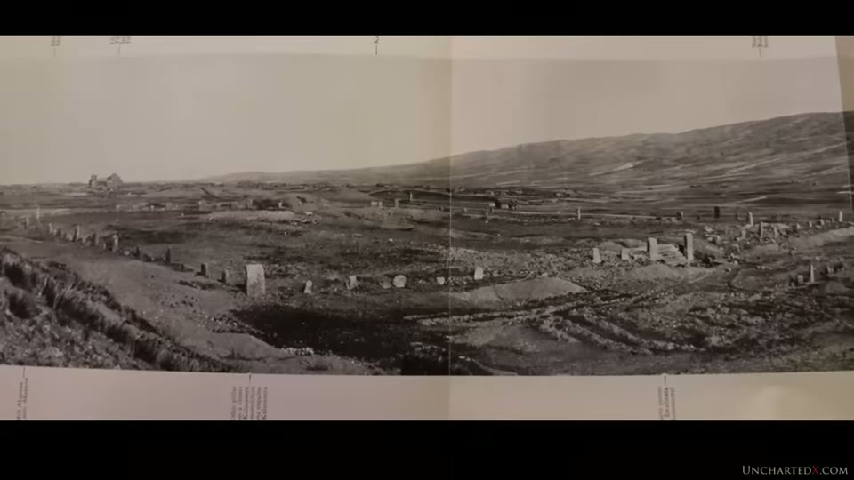
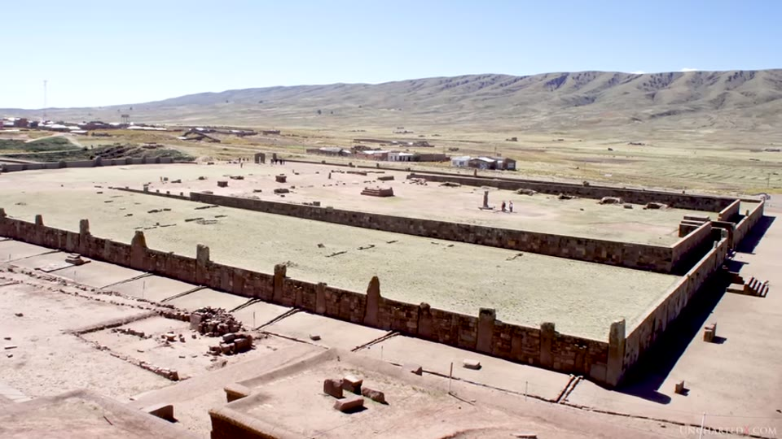
That what stands at the Kalasasaya today is substantially a modern reconstruction.
The mechanism is visible in one shot: tall irregular monoliths standing at intervals, with the panels between them filled by small, regular, closely coursed blocks.
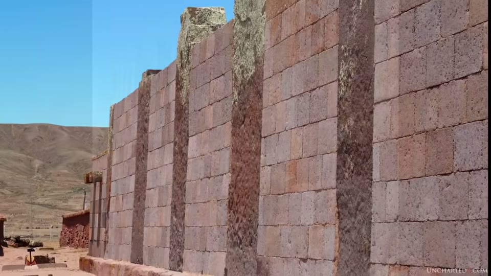
How the reconstruction was done: small coursed blocks filling the gaps between the surviving monoliths.
The claim that the originals went to La Paz has a document behind it too — a plate captioned Group of anticephalic idols in the Temple Tihuanacu (Open-air Museum in La Paz), showing the tenoned heads mounted on a museum wall.
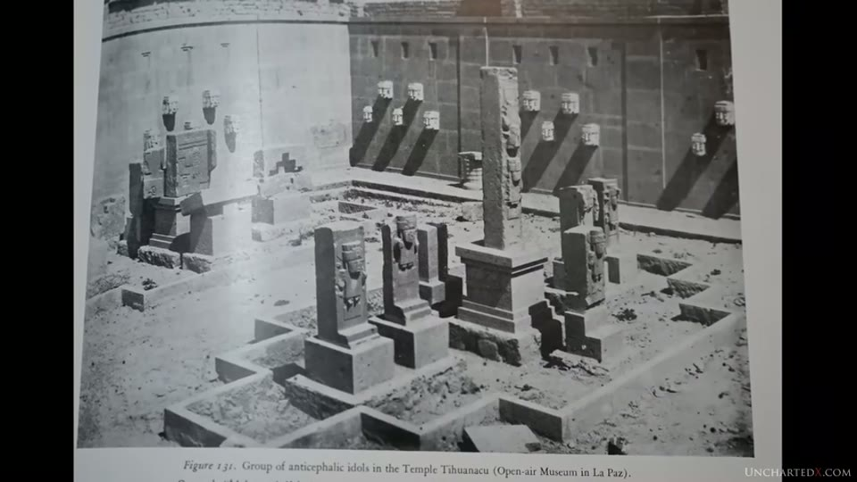
That the original stones and heads from the sunken temple are in a museum in La Paz.
The same reconstruction claim, about the same site, is made in the BAM film entry — which shows the title page of Stübel and Uhle's Tiahuanaco im Hochlande des alten Perú (1892) as its source for the site before restoration, and whose complaint is that nothing at the site tells a visitor any of this.
What is still under the ground
Reported, with the sourcing Ben gives for each 41:30–42:37:
- a fully buried pyramid found by ground-penetrating radar
- an underground citadel said to need more than fifty years to excavate
- terrain-mapping drones showing the extent of what is still under sediment
- tunnels beneath the Akapana explored with robots — "results from such tests are extremely hard to find, and the tunnels have since been resealed and hidden"
- local accounts of staircases going down into the ground, which he gives as rumour
He also singles out a block behind the Akapana he calls the super block: elaborate carving on the front, covered in tiny precise drill holes, and with a curved back that "at least to me, seems to indicate something hydrodynamic, perhaps a sluice gate of sorts" 40:59–41:27. The reading is offered as his own impression and marked as such. The narration calls it an andesite piece; the block filmed is the reddish-purple stone, and nothing in the frame identifies the material.
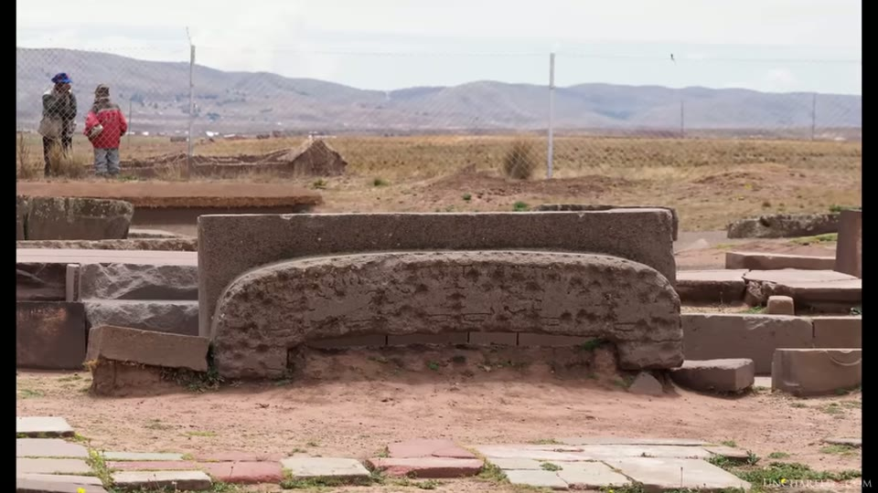
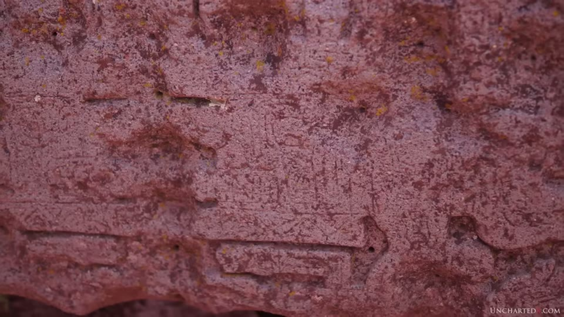
The block the presenter reads as hydrodynamic: a curved underside, an eroded carved face, and small drill holes.
The astronomy, which is where the number comes from
Posnansky's date rests on the obliquity of the ecliptic — the angle between the plane of Earth's equator and the plane of its orbit, about 23.5° today. Ben explains that it oscillates between 22.1° and 24.5° on a cycle of roughly 41,000 years, one of the Milankovitch cycles 44:17–45:13.
The chain of reasoning, as the video gives it:
1. The Kalasasaya is a solar observatory. Standing at the centre of its west wall, the north and south pillars of the east wall mark the outer corners where the sun rises at the solstices; the equinox sunrise falls at the middle of the monumental stair 48:01–48:30. 2. Observed by eye today, the solstice sun still comes up at those corners. Measured with instruments, Posnansky reports a discrepancy of about 18 minutes of arc 48:30–48:58. 3. That difference, applied to "the curve constituted by the formula of extrapolation recommended by the Ephemeris Conference of Paris in 1911", produces 15,000 BC 49:25–49:53.
Step 1 has a drawing behind it, from the book and bilingual, headed East Wall of Kalasasaya / Muro Este de Kalasasaya: an ellipse for Earth's orbit with the sun at its centre, the SE and NE pillars marked at either end of a sightline, the December and June solstices labelled for the southern hemisphere, the two equinoxes dated 21/III and 23/IX, and the unequal halves of the year written in as 178 days 19 hours and 186 days 11 hours. Along the bottom is a plan strip giving the staircase between the two pillars with a distance printed beside each — 6031 meters and 5799 meters — which the narration does not mention.

The solstice sightlines across the Kalasasaya that the 15,000 BC date is calculated from.
Posnansky worked from Sir Norman Lockyer's method, set out in his 1909 Stonehenge and Other British Stone Monuments Astronomically Considered, and enlisted Professor Rolf Müller of the German Astronomical Mission, who Ben says spent several years on site confirming the results [46:11–47:32, 48:58–49:25].
Ben reports the reception: dismissal in terms like "absurd" and "with no scientific reputation". He also reads out Posnansky's own caveat at length, which is that the measurements would one day be checked with better instruments and that errors might be found 49:53–50:42.
The modern redo, and a different number
Neil Steede and Dr Oswaldo Rivera repeated the exercise with computerised data and the astronomical almanac, and analysed not only the eastern sunrise points but the western sunset alignments as well. Their conclusion, as Ben reports it: all four cornerstones of the monument were accurately positioned somewhere around 10,000 BC 51:45–52:14.
Ben adds that the sunset alignments are what convince him the Kalasasaya is an observatory rather than a coincidence, and that this was found long after Posnansky's death 45:42–46:11.
He then reports that Rivera resigned from his post as director of the Bolivian National Institute of Archaeology shortly after this announcement, and gives his own reading of why — "presumably as a result of this heretical observation" 52:14–52:41.
The Younger Dryas, explicitly as speculation
The last strand 52:41–55:09. The modern figure of roughly 10,000 BC sits close to the end of the Younger Dryas, which Ben gives as beginning around 12,900 years ago and attributes to multiple impacts from a fragmenting comet. He refers back to his own earlier video analysing a paper on a site in Chile, which he says showed impact proxies in the strata, a South American megafauna extinction of more than 80%, and sharp climate change in both directions.
The picture he assembles from it is put as a series of questions rather than assertions: could the Younger Dryas have brought the short glacial conditions that ended the first period, and could the rapid warming afterwards — melting Andean glaciers, filling Titicaca to the city's shore — have produced the second and third? He marks it himself: "It is just speculation, but very much like Plato's story for the sinking of Atlantis at 9,600 BC aligning with meltwater pulse 1B and the end of the Younger Dryas, it is quite a remarkable coincidence."
The same event, from the other side of the field, is examined in the Younger Dryas comet entry, where a presenter who accepts the impact evidence goes looking for the population collapse it should have left and reports that she cannot find it. A different date for the megalithic sites — 40,000 to 20,000 years ago, from genetics rather than astronomy — is argued in the megalithic timeline entry.
The cultural argument, which is separable
Running underneath the dating is Posnansky's reason for the book's title: that when Tiwanaku became unlivable its people dispersed into the Americas 07:27–13:22. Ben's examples:
- art style and symbology shared with Chavín de Huántar in northern Peru, radiocarbon dated from around 3000 BC, with its Raimondi Stele and underground labyrinths
- the chacana, the stepped motif known as the Incan cross, which he presents as originating at Tiwanaku and appearing across sites attributed to the Inca
- low stepped pyramids at both Tiwanaku — the Akapana, which he says is a stepped pyramid with a reservoir at its centre, now under sediment — and at Caral on the Peruvian coast, dated to around 3000 BC with at least a dozen such structures
- Posnansky's own map of cultural radiation into South, Central and North America
This strand is independent of the 15,000 BC date and the video does not make it depend on it.
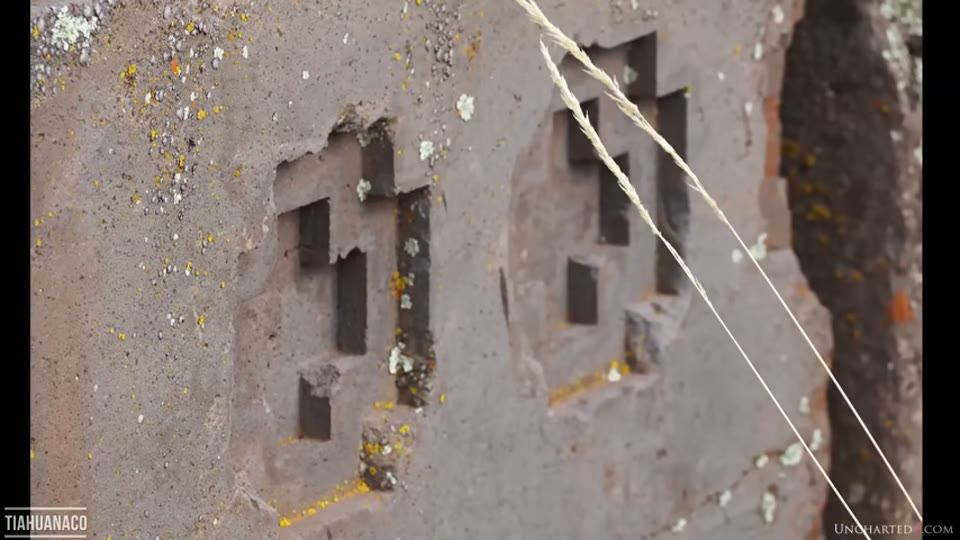
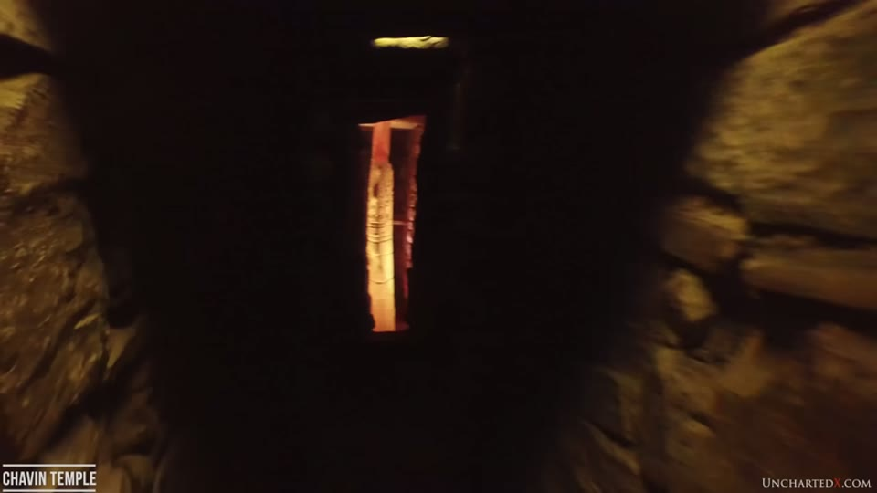
The stepped cross motif at Tiwanaku, and the Chavin site it is linked to.
What you can check yourself
- The strandline figures. Every elevation Bellamy gives is a named place with a number: Sillustani and Lake Umayo near Puno, the north end of Lake Poopó south of Oruro, Titicaca's surface at 12,506 ft. Elevation data for all of them is public.
- Whether the strandline exists and whether it tilts. It is described as surveyed over 375 miles, and Ben says he wants geologists to look at it.
- The obliquity figures. That the tilt swings between 22.1° and 24.5° over about 41,000 years is standard astronomy and checkable in any ephemeris.
- Posnansky's book. Quoted at length and verbatim throughout, and several of its plates and drawings are filmed with their captions legible — the Chihuas geological profile, the Sun Door drawing, the La Paz museum plate, the East Wall of Kalasasaya diagram. Each can be found in the text and read against what the narration says about it.
- **Bellamy's Built Before the Flood.** 1943, named, quoted directly.
- Lockyer's 1909 volume, named as the method Posnansky used.
- That the Kalasasaya standing today is largely reconstructed. Ben states it, shows Posnansky's photographs beside his own, and it is independently claimed in the BAM film from an 1892 source.
- The 1500 BC radiocarbon results, which Ben says exist and were set aside.
- Whether Oswaldo Rivera resigned as director of the Bolivian National Institute of Archaeology, and when.
- The terraces running into the snowline. Photographable from the ground and visible in satellite imagery — and not shown in the video, so this one has to be checked from outside it.
What the video does not settle
- The two dates it advances differ by 5,000 years. Posnansky's 15,000 BC and the Steede–Rivera 10,000 BC are both presented, and the video does not reconcile them or say which it is arguing for. The Younger Dryas section works from the later figure only.
- The Steede and Rivera work is not cited. No paper, no publication, no date for the analysis, and no figure for the alignment difference they measured. The conclusion and the resignation are reported; the workings are not.
- The reason given for Rivera's resignation is Ben's, and he marks it as an assumption — "presumably". No statement from Rivera appears.
- The 18 arc-minutes measurement is reported, not shown. The book's drawing gives the layout of the sightlines, not the observation; neither the 1911 extrapolation formula nor the calculation appears, and no margin of error is given for the 15,000 BC figure.
- The two distances printed on that drawing — 6031 and 5799 metres — are not explained. The narration does not mention them and no scale or unit note is visible on the page.
- The video states that the Kalasasaya is largely a reconstruction, and that the date rests on the positions of its pillars, and does not connect the two. It dates the rebuilding to "recent decades" and Posnansky's measurements to around 1930, without saying which pillars either measurement used, or whether the ones measured were among the few left standing.
- The terraces are not in the video. The claim that terracing runs up into the permanent snowline is spoken over a drive-by shot of flat plain and a general view of Puma Punku.
- The harbour is not in the video either. The quays, dock basins and canals are carried entirely by printed quotations from the book, shown over footage of the Kalasasaya gateway. No dock, quay wall or canal appears on screen, and neither do the parapet coping stones Bellamy measures his strandline against.
- The strandline itself is never photographed. The map shown is a plan of the two water levels; it carries no elevation profile, so the tilt that the argument turns on is not in the image.
- No tilting rate. The argument turns on how long an 800-ft tilt takes, and no figure for tectonic uplift or tilting on the Altiplano appears anywhere in the video. Ben says himself that he hopes to put it to geologists.
- The geological support is unnamed. Studies "conducted in the 1980s" are said to confirm Posnansky's flooding and upheaval; none is titled, authored or quoted.
- The Sun Gate's eroded corner is not photographed. The erosion claim runs over the book's reconstruction drawing, whose own caption states that the erosion was the basis for the drawing. No close view of the corner appears.
- The toxodon is a report of a report, and it is not shown. Posnansky's stratigraphic record for it is not filmed, no photograph of the skull or the layer appears, and no independent confirmation is offered.
- The smilodon reading is a question, and the comparison it asks for is not on screen. Ben puts it as a question and does not answer it. The plates shown during it are the Sun Gate frieze and a puma the book's own caption calls a puma; no carving with enlarged canines is filmed, and no smilodon skull is put beside one.
- The 1500 BC radiocarbon results are said to be "dismissed as unreliable" without who dismissed them, when, or on what grounds.
- The obsidian hydration objection is unsupported by measurement. That the absorption constant varies with climate is asserted; no study measuring that variation is cited.
- The Younger Dryas connection is marked as speculation by Ben himself.
- The precision measurements are second-hand and not demonstrated here. The flatness of the andesite, "down to but a few microns", is credited to Patrice Pooyard's documentary; no figure, instrument or measurement appears, and the passage runs over a general view of Puma Punku. Those measurements, and the instrument's own settings, are in the BAM entry — where the geologist who took them says on camera that the work was hand-made.
- The work is described as four volumes and two are filmed. The second carries a bookseller's pencil note reading "2 vol." above an ink inscription, "Acquired in La Paz Bolivia May 1948". How much of the four-volume work Ben is reading from is not stated.
- A stretch of narration is missing from the transcript. Between roughly 51:00 and 51:45 the auto-caption track drops out mid-sentence and resumes mid-sentence, immediately before the Steede and Rivera result. Whatever is said there has not been recovered.
Names, and four spellings of one place
The transcript is a good one by this channel's standards and most names come through cleanly. Three are flagged:
- Neil Steede is given in the captions as "Neil Steed". The spelling here is the one used by the American archaeologist of that name and is a reconstruction, not something read off the screen.
- Patrice Pooyard appears as "Patrice Poillard". The spelling here is the filmmaker's as credited on Builders of the Ancient Mysteries, which is the film Ben names.
- Ñaupa Huaca, mentioned in passing as the subject of another video, is given as "Napa Huaca".
The site is spelled four ways across the video itself, all of them legitimate and none of them errors: Tiahuanaco in the video's title, Tiwanaku in the narration, TIAHUANACO in the editor's on-screen location captions, and Tihuanacu on the covers and inside the books. Kalasasaya appears as both "Kalasasaya" and "Calasasaya" in the captions; the first is used throughout here, and it is the spelling printed on the book's own diagram.